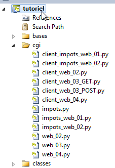
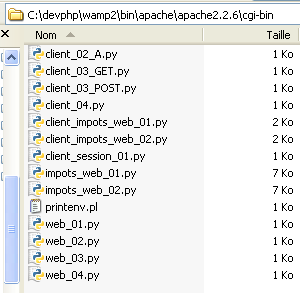

12. Serviços web em Python
 |
Os scripts em Python podem ser executados por um servidor WEB. É este servidor que ficará à escuta dos pedidos dos clientes. Do ponto de vista do cliente, chamar um serviço WEB equivale a solicitar o URL desse serviço. O cliente pode ser escrito em qualquer linguagem, nomeadamente em Python. É necessário saber «comunicar» com um serviço WEB, ou seja, compreender o protocolo Http de comunicação entre um servidor Web e os seus clientes. É esse o objetivo dos programas que se seguem.
Os scripts do serviço Web serão executados pelo servidor Web Apache do WampServer. Devem ser colocados num diretório específico: <WampServer>\bin\apache\apachex.y.z\cgi-bin, em que <WampServer> é a pasta de instalação do WampServer e x.y.z é a versão do servidor web Apache.
 |
Colocar os scripts Python na pasta <cgi-bin> não é suficiente. É necessário que o script indique, na primeira linha, o caminho do interpretador Python a utilizar. Este caminho é indicado sob a forma de um comentário:
O leitor deverá adaptar este caminho ao seu próprio ambiente.
12.1. Aplicação cliente/servidor de data e hora
O nosso primeiro serviço web será um serviço de data e hora: o cliente recebe a data e a hora atuais.
12.1.1. O servidor
#!D:\Programas\ActivePython\Python2.7.2\python.exe
import time
# cabeçalhos
print "Content-Type: text/plain\n"
# envio da hora ao cliente
# hora local: número de milissegundos desde 01/01/1970
# «formato de exibição da data e hora
# d: dia com 2 dígitos
# m: mês com 2 dígitos
# y: ano com 2 dígitos
# H: hora 0,23
# M: minutos
# S: segundos
print time.strftime('%d/%m/%y %H:%M:%S',time.localtime())
Notas:
- linha 6: o script deve gerar por si próprio alguns dos cabeçalhos HTTP da resposta ao cliente. Estes serão adicionados aos cabeçalhos HTTP gerados pelo próprio servidor Apache. O cabeçalho HTTP da linha 6 indica ao cliente que lhe será enviada uma recurso no formato text/plain, ou seja, texto não formatado. Note-se o «\n» no final do cabeçalho, que irá gerar uma linha vazia a seguir ao cabeçalho. Isto é obrigatório: é esta linha vazia que sinaliza ao cliente HTTP o fim dos cabeçalhos HTTP da resposta. Segue-se, em seguida, a recurso solicitado pelo cliente, neste caso um texto não formatado;
- linha 18: a recurso enviada ao cliente é um texto que exibe a data e a hora atuais.
12.1.2. Dois testes
O script anterior pode ser executado diretamente pelo interpretador Python numa janela de comandos, tal como temos feito até agora. Isto permite eliminar eventuais erros de sintaxe ou de funcionamento. Obtém-se o seguinte resultado:
Depois de o script ter sido testado desta forma, pode ser colocado na pasta <cgi-bin> do servidor Apache (ver parágrafo 12). Iniciemos a aplicação WampServer. Isto inicia simultaneamente um servidor web Apache e um SGBD MySQL. Por enquanto, utilizaremos apenas o servidor web. Em seguida, utilizando um navegador, acedamos à seguinte página URL: http://localhost/cgi-bin/web_02.py:
 |
- em [1]: o URL solicitado;
- em [2]: a resposta apresentada pelo navegador;
- em [3]: o código-fonte recebido pelo navegador web. É, de facto, o código enviado pelo script Python.
Com algumas ferramentas (neste caso, o Firebug, um plugin do navegador Firefox), é possível aceder aos cabeçalhos HTTP trocados com o servidor. Acima, o navegador recebeu os seguintes cabeçalhos HTTP:
Nas linhas 7 e 8, reconhece-se o cabeçalho HTTP enviado pelo script Python. Os que o precedem foram gerados pelo servidor web Apache.
12.1.3. Um cliente programado
Vamos agora escrever um script que funcionará como cliente do serviço web anterior. Utilizamos as funcionalidades do módulo httplib, que facilita a criação de clientes HTTP.
# -*- coding=utf-8 -*-
import httplib,re
# constantes
HOST="localhost"
URL="/cgi-bin/web_02.py"
# ligação
connexion=httplib.HTTPConnection(HOST)
# acompanhamento
connexion.set_debuglevel(1)
# envio do pedido
connexion.request("GET", URL)
# processamento da resposta
reponse=connexion.getresponse()
# conteúdo
contenu=reponse.read()
# encerramento da sessão
connexion.close()
print "------\n",contenu,"-----\n"
# recuperação dos elementos da hora
elements=re.match(r"^(\d\d)/(\d\d)/(\d\d) (\d\d):(\d\d):(\d\d)\s*$",contenu).groups()
print "Jour=%s,Mois=%s,An=%s,Heures=%s,Minutes=%s,Secondes=%s" % (elements[0],elements[1],elements[2],elements[3],elements[4],elements[5])
Notas:
- linha 3: o módulo re é necessário para as expressões regulares; o módulo httplib é necessário para as funções dos clientes HTTP;
- linha 9: é criada uma ligação HTTP com a porta 80 do HOST, definida na linha 6;
- linha 11: o acompanhamento permite visualizar os cabeçalhos HTTP do pedido do cliente e da resposta do servidor;
- linha 13: é solicitado o URL do serviço web. Existem duas formas de a solicitar: utilizando um comando HTTP GET ou POST. A diferença entre os dois é explicada mais adiante. Aqui, será solicitada com o comando HTTP GET;
- linha 15: a resposta do servidor é lida. É a resposta completa que aqui é obtida: cabeçalhos HTTP e recurso solicitado pelo cliente. Na sua resposta, o servidor pode ter solicitado ao cliente que se redirecione. Neste caso, o cliente httplib efetua automaticamente o redirecionamento. A resposta obtida é, portanto, a resultante do redirecionamento;
- linha 17: a resposta é composta pelos cabeçalhos HTTP e pelo documento solicitado pelo cliente. Para obter apenas os cabeçalhos HTTP, utiliza-se [reponse].getHeaders(). Para obter o documento, utiliza-se [reponse].read();
- linha 19: assim que a resposta do servidor web for obtida, a ligação ao mesmo é encerrada;
- sabe-se que o documento enviado pelo servidor é uma linha de texto com o formato 15/06/11 14:56:36. Nas linhas 22-26, utiliza-se uma expressão regular para recuperar os diferentes elementos dessa linha.
12.1.4. Resultados
Notas:
- linha 1: os cabeçalhos HTTP enviados pelo cliente ao servidor web;
- linhas 2-6: os cabeçalhos HTTP da resposta do servidor web;
- linha 8: o documento enviado pelo servidor;
- linha 11: o resultado da sua análise;
12.2. Recuperação pelo servidor dos parâmetros enviados pelo cliente
No protocolo HTTP, um cliente dispõe de dois métodos para transmitir parâmetros ao servidor web:
- solicita o URL do serviço na forma
GET url?param1=val1¶m2=val2¶m3=val3… HTTP/1.0
onde os valores vali têm de ser previamente codificados para que determinados caracteres reservados sejam substituídos pelo seu valor hexadecimal.
- solicita o URL do serviço na forma
e, em seguida, entre os cabeçalhos HTTP enviados ao servidor, insere o seguinte cabeçalho:
O resto dos cabeçalhos enviados pelo cliente termina com uma linha em branco. O cliente pode então enviar os seus dados na forma
onde os vali devem, tal como no método GET, ser previamente codificados. O número de caracteres enviados ao servidor deve ser N, sendo N o valor declarado no cabeçalho:
12.2.1. O serviço web
O serviço web a seguir recebe 3 parâmetros do seu cliente: nom, prenom, age. Recupera-os numa espécie de dicionário denominado cgi.FieldStorage, fornecido pelo módulo cgi. O valor vali de um parâmetro parami é obtido através de vali=cgi.FieldStorage().getlist("parami"). Obtém-se uma matriz com:
- 0 elemento se o parâmetro parami não estiver presente na solicitação do cliente;
- 1 elemento se o parâmetro parami estiver presente uma vez na solicitação do cliente;
- n elementos se o parâmetro parami estiver presente n vezes na solicitação do cliente.
Depois de recuperados os parâmetros, o script devolve-os ao cliente.
#!D:\Programas\ActivePython\Python2.7.2\python.exe
import cgi
# cabeçalhos
print "Content-Type: text/plain\n"
# recuperação pelo servidor das informações enviadas pelo cliente
# aqui nome=P&apelido=N&idade=A
formulaire=cgi.FieldStorage()
# estas são reenviadas ao cliente
print "informations recues du service web [prenom=%s,nom=%s,age=%s]" % (formulaire.getlist("prenom"),formulaire.getlist("nom"),formulaire.getlist("age"))
É possível realizar um teste com um navegador da Web:
 |
Em [1], o URL do serviço web. Note-se a presença dos três parâmetros nom, prenom e age. Em [2], a resposta do serviço web.
12.2.2. O cliente GET
# -*- coding=utf-8 -*-
import httplib,urllib
# constantes
HOST="localhost"
URL="/cgi-bin/web_03.py"
PRENOM="Jean-Paul"
NOM="de la Huche"
AGE=42
# os parâmetros devem ser codificados antes de serem enviados ao servidor
params = urllib.urlencode({'nom': NOM, 'prenom': PRENOM, 'age': AGE})
# os parâmetros são colocados no final do URL
URL+="?"+params
# ligação
connexion=httplib.HTTPConnection(HOST)
# acompanhamento
connexion.set_debuglevel(1)
# envio do pedido
connexion.request("GET",URL)
# processamento da resposta
reponse=connexion.getresponse()
# conteúdo
contenu=reponse.read()
print contenu,"\n"
# encerramento da ligação
connexion.close()
Notas:
- linhas 8-10: os valores dos 3 parâmetros enviados ao serviço web;
- linha 13: é necessário codificá-los. Isto é feito através do método urlencode do módulo urllib. Este módulo é importado na linha 3. O método aceita como parâmetro um dicionário {param1:val1, param2:val2, ...};
- linha 15: num comando GET (linha 21), o cliente deve colocar os parâmetros codificados no final do URL do serviço web;
- as linhas seguintes já foram abordadas.
12.2.3. Os resultados
Notas:
- linha 2: repare na codificação dos parâmetros (nome, apelido, idade);
- linha 8: a resposta do serviço web.
12.2.4. O cliente POST
O cliente POST é análogo ao cliente GET, com a diferença de que os parâmetros codificados já não fazem parte do URL de destino. Estes são passados como terceiro argumento da solicitação POST (linha 19).
# -*- coding=utf-8 -*-
import httplib,urllib
# constantes
HOST="localhost"
URL="/cgi-bin/web_03.py"
PRENOM="Jean-Paul"
NOM="de la Huche"
AGE=42
# os parâmetros devem ser codificados antes de serem enviados para o servidor
params = urllib.urlencode({'nom': NOM, 'prenom': PRENOM, 'age': AGE})
# ligação
connexion=httplib.HTTPConnection(HOST)
# acompanhamento
connexion.set_debuglevel(1)
# envio do pedido
connexion.request("POST",URL,params)
# processamento da resposta
reponse=connexion.getresponse()
# conteúdo
contenu=reponse.read()
print contenu,"\n"
# encerramento da ligação
connexion.close()
12.2.5. Os resultados
Notas:
- reparem-se na linha 2, o método utilizado pelo cliente POST para enviar os parâmetros codificados:
- o cabeçalho HTTP Content-Length indica o número de caracteres que serão enviados ao serviço web;
- este cabeçalho HTTP é seguido por uma linha vazia que indica o fim dos cabeçalhos HTTP;
- depois, são enviados os 39 caracteres dos parâmetros codificados.
- linha 8: a resposta do serviço web.
12.3. Recuperação das variáveis de ambiente de um serviço web
12.3.1. O serviço web
O script CGI em Python é executado num ambiente de sistema que possui atributos. Os seus atributos e respetivos valores estão disponíveis num dicionário os.environ.
#!D:\Programas\ActivePython\Python2.7.2\python.exe
import os
# cabeçalhos
print "Content-Type: text/plain\n"
# informações de ambiente
for (cle,valeur) in os.environ.items():
print "%s : %s" % (cle,valeur)
Notas:
- linha 3: é necessário importar o módulo os para ter acesso às variáveis «do sistema».
Se executarmos diretamente o script acima (c.a.d, como script de consola e não como CGI), obtemos na consola os seguintes resultados:
Num navegador da Web (neste caso, é o script CGI que é executado), obtêm-se os seguintes resultados:
 |
Note-se que, dependendo do contexto de execução, o ambiente obtido não é o mesmo.
12.3.2. O cliente programado
# -*- coding=utf-8 -*-
import httplib
# constantes
HOST="localhost"
URL="/cgi-bin/web_04.py"
# ligação
connexion=httplib.HTTPConnection(HOST)
# envio do pedido
connexion.request("GET", URL)
# processamento da resposta
reponse=connexion.getresponse()
# conteúdo
print reponse.read()
12.3.3. Resultados
Note-se que o cliente programado não recebe exatamente a mesma resposta que o navegador web. Isto deve-se ao facto de este último ter enviado ao servidor web informações que foram utilizadas pelo servidor web para criar a sua resposta. Neste caso, o cliente programado não enviou qualquer informação sobre si próprio.